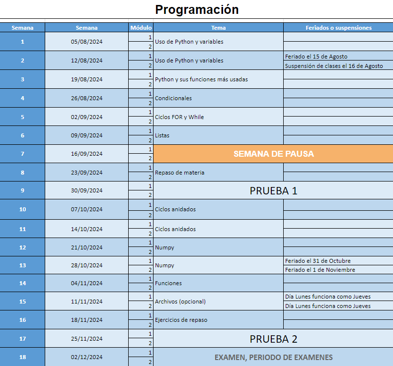
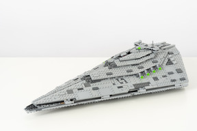

TICS100 - Programación
Presentación al Curso
Diego Ramos Á.
¿Quién es el profe?
Diego Ramos Álvarez
- Ingeniero Civil Informático - 2023
- Master en Science of Data Science - 2023
- Estudiante del Doctorado en Data Science
Ayudantía
Serán los lunes modulo 5 (17:00-18:10)
Ayudante: Juan Pablo Orellana
juanorellana@alumnos.uai.cl
Distribución del curso

Evaluaciones
Cómo y cuándo serán las evaluaciones
- Prueba 1 (P1) => Sabado 05 de Octube (05/10/2024)
- Prueba 2 (P2) => Sabado 30 de Noviembre (30/11/2024)
- Evaluación Extra (AE) => Lo definiremos entre todos
- Tareas
- Controles
- Otros
Calculo de la nota
El cálculo de la nota es el siguiente:
if \(promedio\_ pruebas>= 4.0:\) \[ NF = P1*0.35 + P2*0.35 + AE*0.30 \]
else: \[ NF = P1*0.5 + P2*0.5 + AE*0.00 \]
Examen
Fecha por definir:
- Será en el periodo de exámenes
- Si tienen las 2 notas de prueba mayor a 4.0 (P1 >= 4.0 y P2 >=4.0) se eximen.
- El examen reemplaza la peor nota. Incluso si es peor que la original.
- En caso de Justificar inasistencia a 1 prueba se reemplaza con el examen. En caso de que sean las 2, la segunda nota se reemplazará con un examen oral.
¿Cuál es su experiencia programando?
¿Qué es un problema?
Definición:
- En el ámbito de las ciencias de la computación, un problema es una tarea que debe ser resuelta.
Para resolver un problema:
- Tenemos identificar con qué vamos a trabajar (INPUT)
- Saber que queremos tener de resultado (OUTPUT)
Ejemplos
Supongamos distintas tareas:
- Sumar los números 2 y 4.
- Incrementar el 56 en una unidad.
- Ordenar nombres de un curso según la primera letra del nombre.
Ejemplos
Algoritmos
Esta forma resolver un problema es lo que se conoce como algoritmo.
La definición más exacta:
La secuencia finita de pasos, dispuestos en forma lógica y ordenada, que se deben realizar para resolver un problema.
Como veo la programación

Observaciones
El computador no puede resolver nada que no haya sido programado antes.
Podemos resolver problemas complejos con elementos básicos. Pero no todos los problemas se pueden resolver computacionalmente…
Sino pregunten a Chat-GPT
¿A quíen es más fácil explicar un problema a una persona o a una máquina?
Volamos con un ejemplo
- Uno de los integrantes debe elegir una letra aleatoria, sin contarle a su compañero.
- Este integrante debe escribir en una hoja de papel los pasos para dibujar la letra. Solo utilizando instrucciones.
- No puede mencionar la letra, ni tampoco puede hacer comparaciones.
- Al terminar, le entrega la hoja a su compañero y él debe seguir las instrucciones.
- Comparen si lo dibujado coincide con la letra original.
El objetivo del curso
La idea es que sean capaces de llevar sus ideas a una maquina considerando el paso a paso.
Para esto:
- Identifiquen los elementos que tienen disponibles.
- Qué quieren desarrollar.
- Utilicen los elementos básicos para resolver paso a paso.
¿Donde quieren programar?
Opciones disponibles para el curso:


Acotación Importante
Cualquier duda que tengan por minima que sea, pregunten hasta que entiendan. Yo quiero que aprendan, por lo mismo, estoy dispuesto a resolver todas las dudas que tengan.
Duda: diego.ramos.a@edu.uai.cl
Recomendacion
Cuando programes fijense sobretodo en los errores y recuerdenlos, son los errores son los que los convierten en buenos programadores.